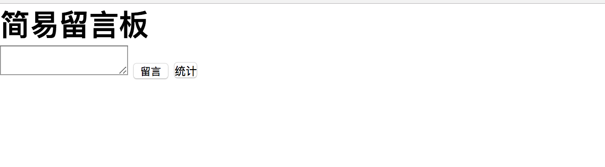
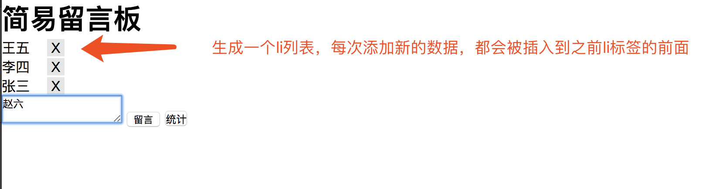

1.模态框案例
需求：
打开网页时有一个普通的按钮，点击当前按钮显示一个背景图，中心并弹出一个弹出框，点击X的时候会关闭当前的模态框
代码如下：

<!DOCTYPE html>
<html>
<head>
<meta charset="UTF-8">
<title></title>
<style type="text/css">
*{
padding: 0;
margin: 0;
}
html,body{
height: 100%;
}
#box{
width: 100%;
height: 100%;
background: rgba(0,0,0,.3);
}
#content{
position: relative;
top: 150px;
width: 400px;
height: 200px;
line-height: 200px;
text-align: center;
color: red;
background-color: #fff;
margin: auto;
}
#span1{
position: absolute;
background-color: red;
top: 0;
right: 0;
width: 30px;
height: 30px;
line-height: 30px;
text-align: center;
color: #fff;
}
</style>
</head>
<body>
<button id="btn">弹出</button>
</body>
<script type="text/javascript">
//获取dom元素 1.获取事件源
var oBtn = document.getElementById('btn');
//创建弹出模态框的相关DOM对象
var oDiv = document.createElement('div');
var oP = document.createElement('p');
var oSpan = document.createElement('span');
// 设置属性
oDiv.id = 'box';
oP.id = 'content'
oP.innerHTML = '模态框成功弹出'
oSpan.innerHTML = 'X';
oSpan.id = 'span1'
// 追加元素
oDiv.appendChild(oP);
oP.appendChild(oSpan);
// 点击弹出按钮 弹出模态框
oBtn.onclick = function(){
//动态的添加到body中一个div
this.parentNode.insertBefore(oDiv,oBtn)
}
// 点击X 关闭模态框
oSpan.onclick = function(){
// 移除oDiv元素
oDiv.parentNode.removeChild(oDiv)
}
</script>
</html>2.简易留言板
需求：

当在textarea中输入内容，点击留言按钮，会添加到浏览器中
图如下：

代码如下：
<!DOCTYPE html>
<html>
<head>
<meta charset="UTF-8">
<title>留言板</title>
<style type="text/css">
*{
padding: 0;
margin: 0;
}
.close{
display: inline-block;
width: 20px;
height: 20px;
line-height: 20px;
text-align: center;
cursor: pointer;
background-color: rgba(0,0,0,.1);
margin-left: 20px;
}
</style>
</head>
<body>
<h1>简易留言板</h1>
<div id="box">
<!--<ul>
</ul>-->
</div>
<textarea id="msg"></textarea>
<input type="button" id="btn" value="留言"/>
<button onclick="sum()">统计</button>
</body>
<script type="text/javascript">
// 0 将ul标签添加到div#box标签中
var oUl = document.createElement('ul');
var oBox = document.getElementById('box');
oBox.appendChild(oUl);
var oBtn = document.getElementById('btn');
var oMsg = document.getElementById('msg')
// 控制留言的总数量
var count = 0;
oBtn.onclick = function(){
// 点击留言按钮事件操作
// 1.创建li标签
var oLi = document.createElement('li');
//2.设置内容
oLi.innerHTML = oMsg.value + "<span class='close'>X</span>"
// 3.如果想在插入的第一个li获取的前面继续添加li标签
//3.1获取li标签
var olis = document.getElementsByTagName('li');
//3.2 如果是第一次添加的li标签，则直接添加到ul的后面
if(olis.length == 0){
oUl.appendChild(oLi);
count++;
}else{
// 3.3 如果不是第一次添加的li标签，则插入到第一个li标签的前面
oUl.insertBefore(oLi,olis[0]);
count++;
}
// 4.添加完成之后 清空textarea的值
oMsg.value = '';
// 5.点击X的时候删除当前的一条数据
//5.1先获取所有的X
var oSpans = document.getElementsByTagName('span');
// 5.2for循环 对所有的X添加点击事件
for(var i = 0; i< oSpans.length; i++){
oSpans[i].onclick = function(){
// 5.3 移除当前的li标签
oUl.removeChild(this.parentNode)
count--;
}
}
}
function sum(){
alert('一共发布了'+count+'条留言');
}
</script>
</html>
3.使用js模拟选择器中hover
<!DOCTYPE html>
<html>
<head lang="en">
<meta charset="UTF-8">
<title></title>
<style>
button {
margin: 10px;
width: 100px;
height: 40px;
cursor: pointer;
}
.current {
background-color: red;
}
</style>
</head>
<body>
<button>按钮1</button>
<button>按钮2</button>
<button>按钮3</button>
<button>按钮4</button>
<button>按钮5</button>
<script>
//需求：鼠标放到哪个button上，改button变成黄色背景（添加类）
var btnArr = document.getElementsByTagName("button");
//绑定事件
for(var i=0;i<btnArr.length;i++){ //要为每一个按钮绑定事件，所以用到了for循环
btnArr[i].onmouseover = function () {
//【重要】排他思想：先把所有按钮的className设置为空，然后把我（this）这个按钮的className设置为current
//排他思想和for循环连用
for(var j=0;j<btnArr.length;j++){
btnArr[j].className = "";
}
this.className = "current"; //【重要】核心代码
}
}
//鼠标离开current时，还原背景色
for(var i=0;i<btnArr.length;i++){ //要为每一个按钮绑定事件，所以用到了for循环
btnArr[i].onmouseout = function () { //鼠标离开任何一个按钮时，就把按钮的背景色还原
this.className = "";
}
}
</script>
</body>
</html>代码解释：
鼠标悬停时，current栏变色，这里用到了排他思想：先把所有按钮的className设置为空，然后把我(this)这个按钮的className设置为current，就可以达到变色的效果。核心代码是：
//排他思想：先把所有按钮的className设置为空，然后把我（this）这个按钮的className设置为current
//排他思想和for循环连用
for(var j=0;j<btnArr.length;j++){
btnArr[j].className = "";
}
this.className = "current";4.tab栏选项卡
代码如下：
<!DOCTYPE html>
<html>
<head>
<meta charset="UTF-8">
<title></title>
<style type="text/css">
*{
padding: 0;
margin: 0;
}
ul{
list-style: none;
}
#tab{
width: 480px;
margin: 20px auto;
border: 1px solid red;
}
ul{
width: 100%;
overflow: hidden;
}
ul li{
float: left;
width: 160px;
height: 60px;
line-height: 60px;
text-align: center;
background-color: #cccccc;
}
ul li a{
text-decoration: none;
color:black;
}
li.active{
background-color: red;
}
p{
display: none;
height: 200px;
text-align: center;
line-height: 200px;
background-color: red;
}
p.active{
display: block;
}
</style>
</head>
<body>
<div id="tab">
<ul>
<li class="active">
<a href="#">首页</a>
</li>
<li>
<a href="#">新闻</a>
</li>
<li>
<a href="#">图片</a>
</li>
</ul>
<p class="active">首页内容</p>
<p>新闻内容</p>
<p>图片内容</p>
</div>
</body>
<script type="text/javascript">
window.onload = function(){
// //需求：鼠标放到上面的li上，li本身变色(添加类)，对应的p也显示出来(添加类);
//思路：1.点亮上面的盒子。 2.利用索引值显示下面的盒子。
var tabli = document.getElementsByTagName('li');
var tabContent = document.getElementsByTagName('p')
for(var i = 0; i < tabli.length; i++){
// 绑定索引值（新增一个自定义属性：index属性）
tabli[i].index = i;
tabli[i].onclick = function(){
// 1.点亮上面的盒子。 2.利用索引值显示下面的盒子。(排他思想)
for(var j = 0; j < tabli.length; j++){
tabli[j].className = '';
tabContent[j].className = '';
}
this.className = 'active'
tabContent[this.index].className = 'active';//【重要代码】
}
}
}
</script>
</html>5、购物车案例
代码如下：
<!DOCTYPE html>
<html lang="en">
<head>
<meta charset="UTF-8">
<title></title>
<style type="text/css">
*{
padding: 0;
margin: 0;
}
.box{
width: 500px;
height: 400px;
margin: 100px auto;
background-color: rgba(255,255,255,0.4);
position: relative;
}
.car{
width: 150px;
height: 30px;
background-color: #fff;
padding-left: 30px;
position: absolute;
left: 130px;
top: 3px;
z-index: 3;
border: 1px solid green;
}
.shop{
width: 310px;
height: 70px;
background-color: #fff;
position: absolute;
top:33px;
left: 0;
display: none;
}
div.c{
border-bottom-width: 0;
}
div.t{
border: 1px solid green;
}
</style>
</head>
<body>
<div class="box">
<div class="car" id="myCar">我的购物车</div>
<div class="shop t" id="shop"></div>
</div>
<script type="text/javascript">
var myCar = document.getElementById('myCar');
var shop = document.getElementById('shop');
myCar.onmouseover = function(){
shop.style.display = 'block';
myCar.className +=' c';
}
myCar.onmouseout = function(){
shop.style.display = 'none';
myCar.removeAttribute('class');
myCar.className = 'car';
}
</script>
</body>
</html>
作者：流浪者
日期：2019-09-06